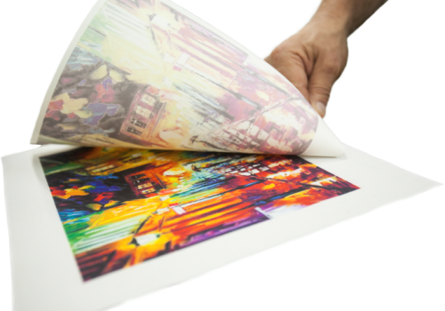

¿Por qué usar Sublimación?
La sublimación de tintas en telas y materiales rígidos es ahora posible gracias a las impresoras de formato ancho tales como la Texart™ RT-640, que permite la personalización rentable de todo artículo, desde pancartas grandes hasta mosaicos de cerámica. La sublimación de tinta funciona penetrando la superficie del sustrato con tinta. Los materiales hechos por el hombre tales como nylon, ciertos plásticos, y telas de poliéster contienen polímeros que, al ser calentados, permiten la fijación de tinta. La impresión de sublimación de tinta logra colores bellos y permanentes que están embebidos en el sustrato o tela, en lugar de estar impresos en la superficie. Las imágenes en la tela no se desvanecerán ni resquebrajarán, incluso luego de varias lavadas. Las imágenes en sustratos duros no se astillarán, pelarán o rasguñarán.
* Con una pequeña inversión puede ofrecer a sus clientes una gran gama de productos personalizables, sin depender de nadie externo para que haga el marcaje. Además, la impresión tiene un aspecto muy profesional y una gran durabilidad. Lo mejor de todo: la venta de esos objetos marcados es un negocio de alta rentabilidad.
* Las tintas de sublimación han progresado increíblemente en los últimos años y ahora son muy fiables. También es importante acertar con profesionales que sepan asesorar adecuadamente.